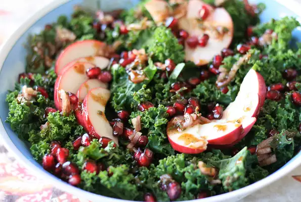

Healthy Apple and Kale Salad

Description
This recipe is delicious! Kale has been a staple dealing with diabetic health issues. The apple adds sweetness to help with the thicker green kale base. Quickly create this hearty meal in minutes!
Main Ingredients:
- 10 ounces kale, shredded
- 2 Honey-crisp apples, thinly sliced
- 1 pomegranate, seeds only
- ½ teaspoon ground cinnamon
Dressing:
- 2 tablespoons extra-virgin olive oil
- 2 tablespoons lemon juice
- 1 shallot, thinly sliced
- 1 tablespoon chopped fresh thyme
- ground black pepper to taste
- 1 pinch crushed red pepper flakes
Directions:
- Massage kale with your hands until leaves have softened, about 2 minutes. Place in a large bowl. Add apples, pomegranate seeds, and cinnamon.
- Stir together olive oil, lemon juice, shallot, thyme, pepper, and red pepper flakes in a small bowl. Pour dressing over kale salad and toss to combine.